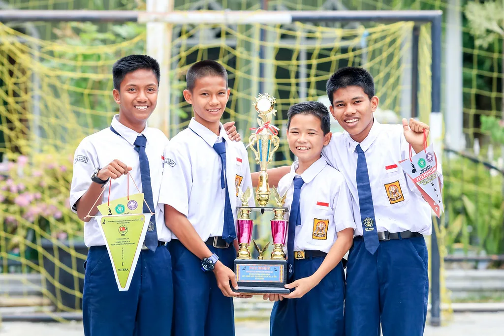
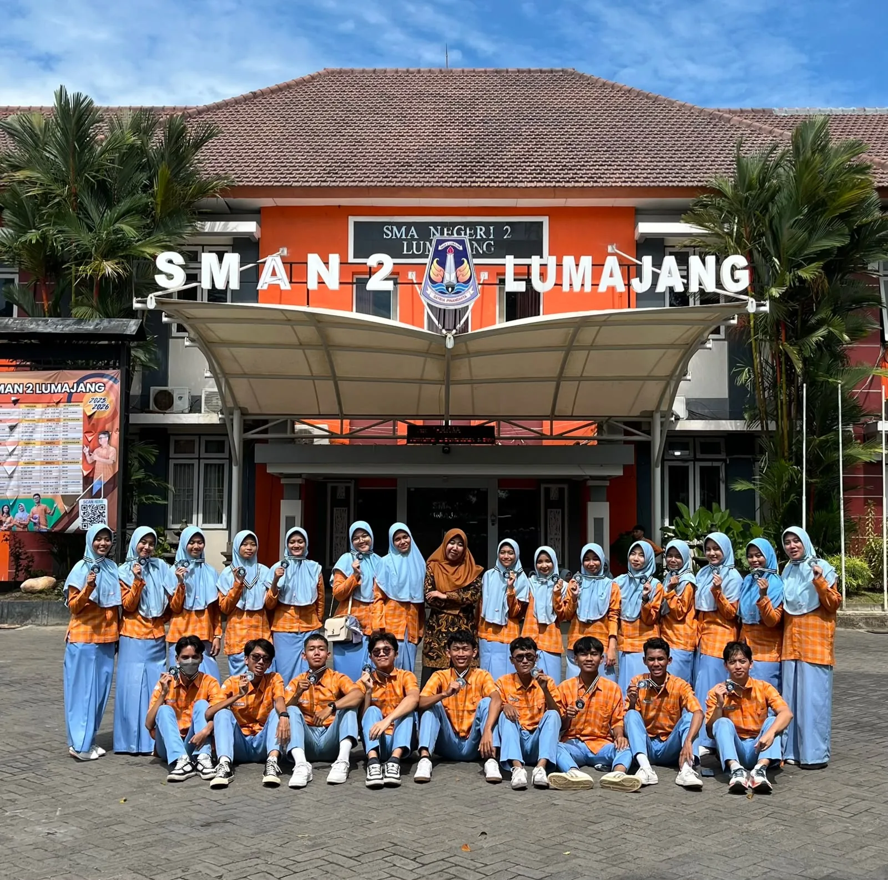
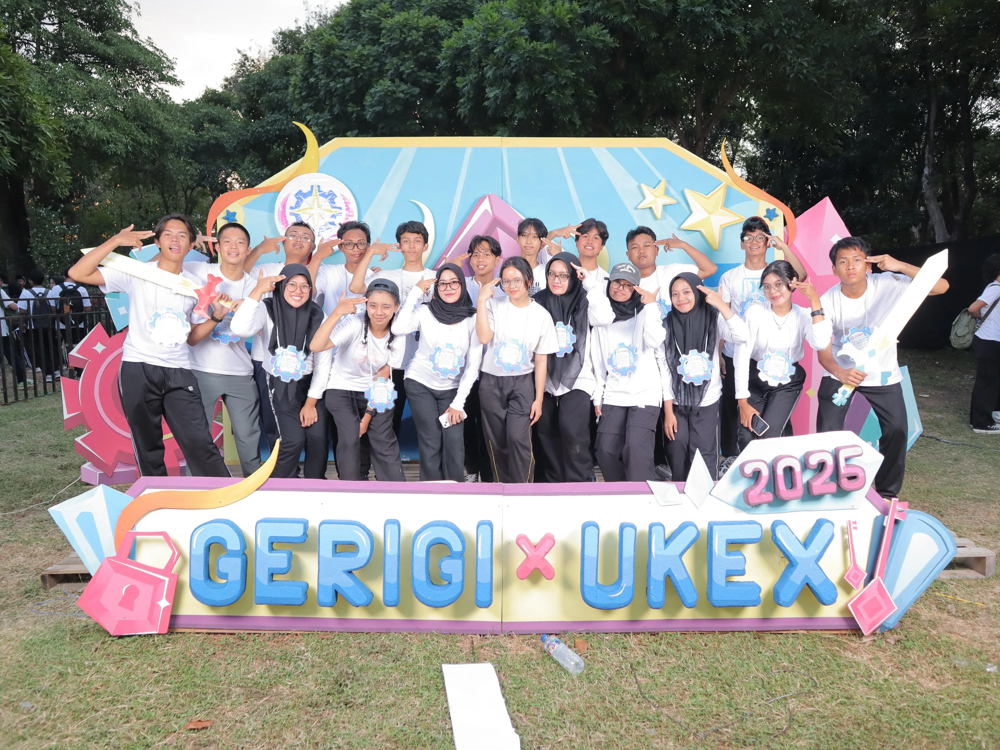

Riwayat Pendidikan
Perjalanan mencari sebuah kata "Cita-Cita" namun berkahir menemukan banyak momen, cerita, dan tawa bersama, disinilah bagaimana perjalanan saya dimulai hingga sekarang.

SMP NEGERI 2 TARIK
Saya bersekolah pada jenjang sekolah menengah pertama di SMP NEGERI 2 TARIK, Sidoarjo, Jawa Timur. Pada jenjang SMP saya aktif mengikuti perlombaan di bidang sains.

SMA NEGERI 2 LUMAJANG
Saya bersekolah di jenjang sekolah menengah atas di SMA NEGERI 2 LUMAJANG. Pada jenjang SMA saya memfokuskan diri mengikuti OSN di bidang fisika untuk nantinya saya gunakan dalam pendaftaran SNBP.

INSTITUT TEKNOLOGI SEPULUH NOPEMBER
Saya berkuliah di Institut Teknologi Sepuluh Nopember di Fakultas Teknologi Elektro dan Informatika Cerdas (FTEIC) pada prodi S-1 Teknologi Informasi yang berfokus pada pengembangan keamanan siber (cybersecurity) dan pengelolaan infrastruktur teknologi yang aman, seperti pengembangan web, aplikasi mobile, serta Internet of Things (IoT).